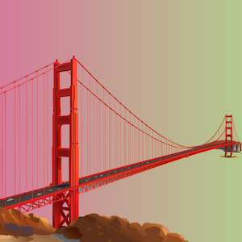
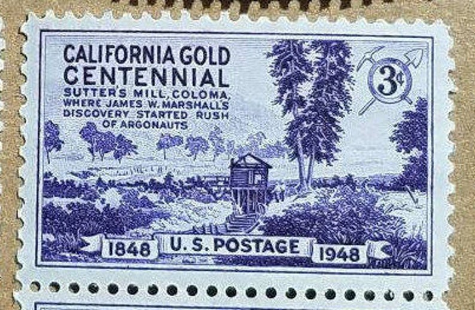
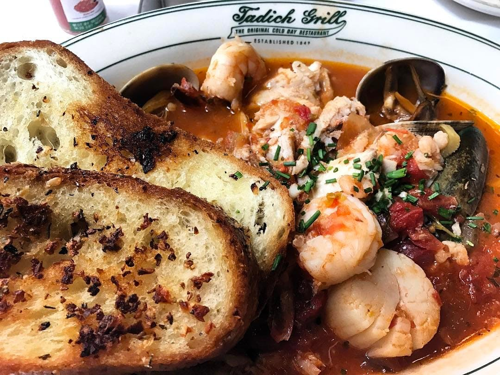
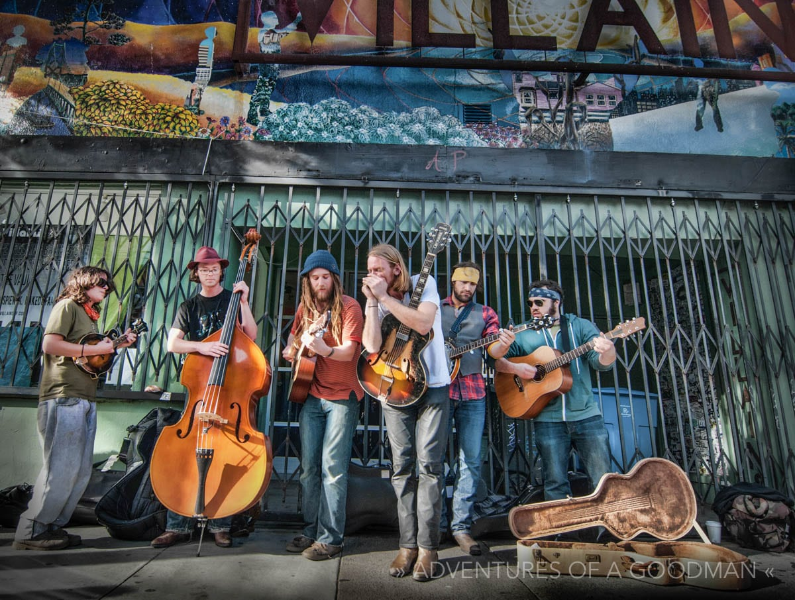

San Francisco
About
Intro
San Francisco, officially the City and County of San Francisco, is a cultural, commercial, and financial center of Northern California. San Francisco is part of the 12th-largest metropolitan statistical area in the United States by population, with 4.7 million people, and the fourth-largest by economic output, with GDP of $592 billion in 2019. With San Jose, it forms the fifth most populous combined statistical area in the United States, with 9.67 million residents as of 2019. Colloquial nicknames for San Francisco include The City, SF, Frisco and San Fran. The historic center of San Francisco is the northeast quadrant of the city anchored by Market Street and the waterfront.
History
Perched atop hills and filled-in marshland at the entrance to one of the Pacific’s largest natural harbors, San Francisco has had an outsized influence on the history of California and the United States. Originally a Spanish (later Mexican) mission and pueblo, it was conquered by the United States in 1846 and by an invading army of prospectors following the 1848 discovery of gold in its hinterland. The Gold Rush made San Francisco a cosmopolitan metropolis with a frontier edge. The great 1906 earthquake and fire destroyed much of the city but barely slowed its momentum; San Francisco barreled through the 20th century as a center of wealth, military power, progressive culture and high technology.
Culture
Cuisines
The city is the birthplace of the local variety of sourdough bread, the Mission burrito, and steam beer. Fisherman's Wharf has served local specialty Dungeness crab for decades. Food companies include Anchor Brewing Company, Boudin Bakery, the Ghirardelli Chocolate Company. Famous past and present restaurants include the Tonga Room, Fleur de Lys, Greens, Original Joe's, Stars, Vesuvio Cafe and the Top of the Mark. California Cuisine and fusion cuisine are prominent in the city. Food trucks are a source of ethnically diverse, and gourmet street foods, with concentrations of various trucks at regular times and places.
Music
The San Francisco sound refers to rock music performed live and recorded by San Francisco-based rock groups of the mid-1960s to early 1970s. It was associated with the counterculture community in San Francisco, particularly the Haight-Ashbury district, during these years. San Francisco is a westward-looking port city, a city that at the time was 'big enough' but not manic like New York City or spread out like Los Angeles. Hence, it could support a 'scene'. According to journalist Ed Vulliamy, "A core of Haight Ashbury bands played with each other, for each other".
